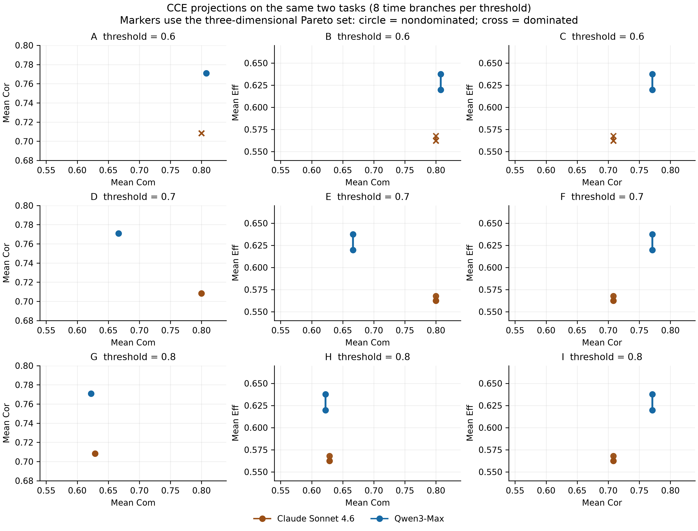
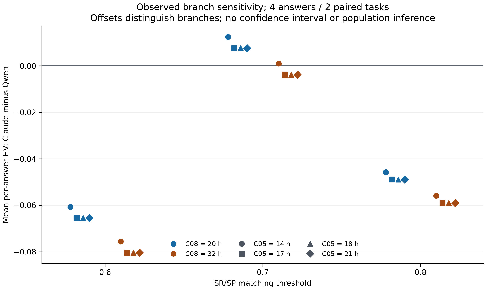

2026-10-12。本阶段新增模型调用 0，实际账本仍为 438/438。复用真实答案、已有 Qwen 返回、原 SR/SP 和原 EGES 函数；新增来源时间规则、离线复算、阈值敏感性和可审查的取值账本。
新增结果与论文意义
自动时间处理恢复了 R3C01、R3C04、R3C07 的完整数值 CCE，核心时长分别为 34.5、72、8.5 h。原 8 份确认答案现在有 4/8 可由本候选得到无分支完整 CCE；若保留 C08 原先“执行可选漂白”的单点，结果文件中的完整数值为 5/8。C02、C05、C08 另有明确条件下的完整结果，合计 7/8 至少存在一个可计算的条件；截断的 C03 仍未恢复。这里的“原确认”描述样本来源，本轮已使用这些材料开发规则，不能再称独立前瞻确认。
此前笼统的“5/8 单值完整”需要补充上述来源条件。程序能输出数字、来源支持一个唯一执行分支、科学判断正确，是不同的结论。全文、模型返回和旧数值都保留；本轮没有为了唯一化而挑最高分的分支，也没有把未知项清零。
| 实际队列 | 本轮前→后有时间分 | 保留历史点的完整数值 CCE | 本候选支持的无分支完整 CCE |
|---|---|---|---|
| 24 份受控＋8 份原确认返回 | 26→29 / 32 | 26→29 / 32 | 28/32＝24 受控＋4 原确认 |
| 67 份历史返回 | 61→63 / 67 | 48→49 / 67 | 47/67；另两份沿用原冲突读数点 |
两批包含重复、变体和交叉来源，不能相加成 99 个独立样本。32 返回对应 20 个提交全文、14 个规范化全文；历史批次对应 40 个全文。历史输入还保留此前两份来源辅助时间记录，所以整批完成比例不是纯自动准确率。历史新增 FPC02 完整 CCE、FPC04 时间分；其余直接分数和已存在的有限时间分未变。
后续逐答案结果 · 历史逐答案结果 · 逐操作 JSON · 实际命令 · 冻结配置
实验设计：把时间表达、操作范围和执行分支分开验证
计算对象为原 prompt 中用于 EGES 的核心孵育时间。对每条已保存的操作，记录来源区间，判断是否属于核心处理，再解析该操作的持续时间与次数。使用已有模型操作分解作为输入，原文标题、重复句和父步骤用于补足明确关系。相邻正文中的“累计 72 h”替换初始贡献，不作为额外孵育相加；“每 24 h 更换”作为频率，不计成另一个 24 h。
每个确定执行分支分别求和：T_b = Σ n_i × d_i。显式有限范围 [a,b] 使用 (a+b)/2；这是用户允许的范围点值约定。它不适用于“至少”、未知时长、互斥的 or、或跨可选路线求平均。缺次数的 each 保留待定。非数字 overnight 按原规则 8 h；答案明确写 12 h 时使用 12 h。必需的成像前平衡计入，长期储存不计入。未知的并行排程不擅自作为串行总时长。
来源取值与规则验证的设计参考了 HeidelTime（SemEval 2010） 对时间表达识别和规范化的区分；规则化并不能代替实验阶段判断。CheckList（ACL 2020） 支持按具体行为设计边界、不变性与负向检查；这些文章没有验证本项目的生物学准确率。
本轮通过 666 项检查，其中包含 26 个合成边界例；校验 2,071 处来源引用和 220 个来源文件绑定。合成例、算术检查、与助手先前注释的一致性均不冒充独立专家验证。24 份原受控结果的所有分项保持不变。三个主动删除时长的历史对照仍是 NA。
实际失败与修复过程
| 版本/现象 | 定位到的原因 | 修复与真实验证 |
|---|---|---|
_01：C01=82.5 h、C04=150 h，错误偏长 |
未识别复数 washes、重复洗涤继承抗体阶段、中文核染标题；把染色清洗当成核心孵育 | 以来源标题和操作角色修复，最终 C01=34.5、C04=72 h；均与先前逐条来源分解一致 |
_01：C02 被输出单一 34.5 h |
可选核染中混合返工的核心转变未独立保留 | 改为“不执行可选部分”34.5 h；执行时有三项核心时长不明，保留已知小计及缺项 |
_01/_02：FPC13 整条路线被算为 134 h |
只读取初始 48 h，遗漏来源中累计达到 72 h 的关系 | 复用可核查的累计来源记录，最终总量 158 h；原时间分完整保留 |
| FPC07 的 Time 字段含逗号及“typically 12–24 h” | 若按逗号截断字段，会丢失有限范围 | 完整字段解析为该操作 18 h、整条路线 33.5 h，与旧来源辅助结果相同 |
| C05 原文有两处二选一时长，C08 有可选漂白 | 原文确实对应多种执行情况，不是 JSON 缺失 | 自动枚举 C05 的 14/17/18/21 h 与 C08 的 20/32 h；不按成绩选分支 |
四轮原始结果、失败数值和当时的代码快照均保留在 _01 至 _04 目录。最终版本为 source-time-ledger-v1.3，以 _04/code_snapshot 的文件哈希区分确切实现。
| 原确认答案 | 自动无分支核心小时 | 完整条件分支小时 | 保留结果表的 Eff | 当前解释 |
|---|---|---|---|---|
| R3C01 | 34.5 | 34.5 | 0.814099 | 自动无分支单值 |
| R3C02 | NA | 34.5 | NA | 条件分支 |
| R3C03 | NA | 无 | NA | 原答案截断，仍缺项 |
| R3C04 | 72 | 72 | 0.853304 | 自动无分支单值 |
| R3C05 | NA | 14、17、18、21 | NA | 条件分支 |
| R3C06 | 144 | 144 | 0.612076 | 自动无分支单值 |
| R3C07 | 8.5 | 8.5 | 0.584177 | 自动无分支单值 |
| R3C08 | NA | 20、32 | 0.662989 | 沿用原 32 h 点；另列 20/32 h 分支 |
联合结果、帕累托与重采样：已实际计算
固定 Claude Sonnet 4.6、Qwen3-Max 和两道共同题 q23、q248，共四份生成答案。每题先算 IA 与 HV，再对题目取平均；帕累托比较平均 Com、Cor、Eff。只接受无分支候选点时，两模型的共同完整题集仍为空；沿用 C08 原分支点后为 q248；显式设置 C05 与 C08 的分支后，两题均可计算。因此本节是条件分析。
自动账本复现了上一阶段全部 8 个主时间场景，所有均值逐值相同；没有将另外的作者解释敏感性场景冒称为自动结果。在主阈值 0.7 下，两模型在八种情况均互不支配。C08=32 h 时，C05=14 h 的 Claude−Qwen 平均 HV 差为 +0.0010626；C05=17 h 时变为 −0.0037430。C08=20 h 时，四种 C05 分支的差均为正。时间分支足以改变 HV 排序，不能只展示一组最有利数值。
两题按模型同步成对重采样的有序抽样只有 (23,23)、(23,248)、(248,23)、(248,248)，共 2²=4 个，每个权重 1/4。本轮直接枚举四种，所以八场景共 32 条派生抽样记录；这不是新增 32 个观测，也不需要用 2,000 次 Monte Carlo 近似这四种情况。八个场景下的精确非支配入选频率均为 Claude 3/4、Qwen 4/4：这是对这两道已观察题重新赋权的描述，不是“模型总体最优的概率”。任务包的 2,000 次设置仍适用于有足够来源块的一般家族重采样。本例两题共享 FDISCO 参考来源，保守连通分块只有一个，无法估计来源块之间的不确定性；重复 2,000 次不会创造新的来源块。
继续完成阈值实验后，发现主结论仍不稳定
按任务包事先规定的 0.6/0.7/0.8 复用已保存的行/列最大余弦相似度和原受控矩阵。三个设置均采用同一完整参考候选集合，在任务/方法筛选后按最大 SR、最大同参考 SP、固定版本顺序选择。没有新编码、没有新模型请求；主结果的 SR/SP 和阈值 0.7 原样保留，敏感性结果单列。
| 原确认答案 | 阈值 0.6：SR / SP | 主阈值 0.7：SR / SP | 阈值 0.8：SR / SP |
|---|---|---|---|
| R3C01 | 0.444444 / 0.92 | 0.333333 / 0.16 | 0.111111 / 0.12 |
| R3C02 | 0.444444 / 0.944444 | 0.333333 / 0.138889 | 0.111111 / 0.138889 |
| R3C03 | 0.333333 / 1 | 0 / 0 | 0 / 0 |
| R3C04 | 0 / 0 | 0 / 0 | 0 / 0 |
| R3C05 | 1 / 0.482759 | 1 / 0.275862 | 0.142857 / 0.068966 |
| R3C06 | 0.15 / 0.642857 | 0 / 0 | 0 / 0 |
| R3C07 | 0 / 0 | 0 / 0 | 0 / 0 |
| R3C08 | 0.888889 / 0.885714 | 0.333333 / 0.114286 | 0.111111 / 0.057143 |
最有诊断价值的是 C03：原答案截断到 Incubation with，降低阈值后 SR 从 0 变成 1/3、SP 从 0 变成 1。这表明通用操作开头也能超过较低余弦阈值，SP 不是实验正确率。C04、C07 的中文全文在 0.6 下仍然零命中，先前保存的最大相似度分别仅 0.5071、0.4883，且没有长文本截断。低 SR 不能直接解释为没有对应操作；仅降低阈值同时可能增加不完整短句的命中。
| 阈值 | 相同两题、8 个时间场景的三维帕累托结果 | Claude−Qwen 平均 HV 差的范围 |
|---|---|---|
| 0.6 | 八场景均为 Qwen 支配 Claude | −0.080442 至 −0.060690 |
| 0.7（主） | 八场景均互不支配 | −0.003743 至 +0.012533 |
| 0.8 | 八场景均互不支配 | −0.059029 至 −0.045792 |
阈值 0.8 时 C01/C02/C08 的所选 iDISCO+ 参考版本改变，按原预设规则发生，未手动挑选。确认队列的分项覆盖在三个阈值均相同，不能用覆盖变化解释上述排序差。共完成 8 答案×3 设置、24 受控返回×3 设置、18 原配对×3 设置；派生行数分别为 24、72、54，不能计作新增实际评价。24 个联合场景均使用相同两题。
受控删除问题也未消失：q2 的旧 Cor 仍增加 1/24；在 0.8 下 ΔSR=0，进而导致 ΔHV=+0.018087。q21/q22 删除在 0.7 下 SR 不响应，在 0.6 下分别下降 1/7、2/7。编号变化在全部阈值、两次实际返回均保持各指标不变。结果支持“编号处理已稳定”，不支持“所有删除和语义判项已正确”。
下一步方向是独立验证跨语言和步骤粒度，而非按模型排名调阈值。Making Monolingual Sentence Embeddings Multilingual using Knowledge Distillation（EMNLP 2020） 提供了跨语言句向量对齐的已发表方案；可作为候选编码器/语义等价检查方向，但尚未在本数据运行，不能称已解决。可行验证应同时包含中文—英文等义步骤、截断通用句、必要步骤删除及步骤拆合，开发后固定，再评估未暴露材料。旧 all-mpnet-base-v2 和原 SR/SP 继续作为基线。
确认阈值表 · 所有候选参考得分 · 受控配对 · 24 个条件联合场景

各列投影使用同一个三维非支配集合，图中连线表示明确时间分支范围，不是置信区间。SVG · PDF

SVG · PDF · 逐图数据 · 英文 Methods/Results 与图注
各实验还剩什么
| 实验 | 已形成的真实结果 | 仍待完成的部分 |
|---|---|---|
| E1：专家与步骤适配 | 原 SR/SP、候选完整版本和命中取值保存；新增三阈值复核 | 一位专家 5 开发＋15 留出仍无回传；跨语言匹配和粗细粒度问题尚未通过独立核查 |
| E2：受控验证/合理替代路线 | 原 24 返回、18 配对保持完整；新增 54 条阈值配对派生结果 | q2 Cor 上升、q22 主阈值 Com 不响应仍在；6 个第二路线候选尚无已确认合格并完成的 6–8 对 |
| E3：局部提取 | 标签与时间都可保存原文→关系/范围→数值链，三份确认时间缺分已自动恢复 | 仍依赖保存的模型操作分解；C03 截断、C02 混合步骤时长、原标签示例歧义等未解决；专家核查没有被助手代替 |
| E4：评价稳定性 | 24 原受控分值不变；既有有限重复组零极差结果可复用 | 本轮没有新模型重复、没有新跨评价器试验；不能把确定性后处理称为随机稳定性大幅提高 |
| E5：CCE/帕累托/重采样 | 8 自动时间场景、24 时间×阈值场景、精确 4 种成对抽样完成 | 排名对时间与阈值敏感；共同题只有两道、来源连通块只有一个，无法支持总体优劣与来源级置信区间 |
| E6：湿实验 | 已有样本量敏感性、随机化、模板和分析入口继续保留 | 测量仍为 0；按任务包保持计划状态，不能给出湿实验效果结论 |
Correctness 本轮仍沿用真实旧 LLM 返回。用户要求的“LLM 做结构、逻辑与常识安全审查，数值有效性由 EGES 计算”已落实到五组配对请求包，但实际执行仍为 0/10 请求、0/5 配对。当前不能把旧 Cor 的定量惩罚理由写成新版定性规则已验证。该包需要尚未回传的新增最多 10 次/2 小时授权；已有明确总调用上限已用完，旧授权窗口已结束。人工预算不变，不使用 Llama 评价器。
九个可直接复查的全流程示例
R3C01__r0 · R3C02__r0 · R3C03__r0 · R3C04__r0 · R3C05__r0 · R3C07__r0 · R3C08__r0 · FPC07 · FPC13
每个示例包含原题、完整真实答案、评分正文、逐操作取值、标签来源及最终 CCE。C01 看父步骤时间只算一次与重复解释；C04 看染色清洗范围；C05/C08 看分支；FPC13 看累计总量；C03 看真实缺项与低阈值误匹配。整体目标仍未完成，本阶段完成的是自动时间候选及可复算的敏感性证据。